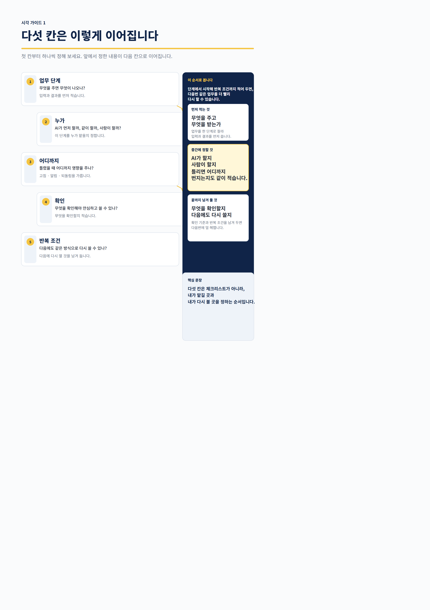
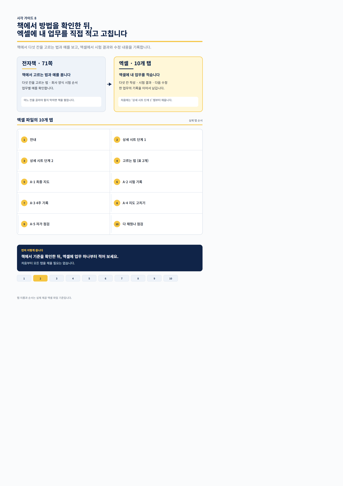

이런 순간이 반복된다면
AI를 쓸 줄 몰라서가 아니라, 맡길 범위와 확인 기준을 매번 처음부터 다시 정하느라 막히는 경우입니다.
초안은 빨리 나왔는데그대로 써도 되는지 몰라 처음부터 다시 확인합니다.
회사 양식을 맡겼는데글꼴·색·숫자·칸 위치 중 무엇을 봐야 할지 막막합니다.
유료 결제를 고민하지만내 업무가 무료 계정에서 어디까지 되는지 시험해 본 적이 없습니다.
업무 하나를 다섯 칸으로 나눕니다
1단계무엇을 주면 무엇이 나오나
2누가AI·사람·함께 중 누가 먼저 하나
3어디까지틀렸을 때 어디까지 영향을 주나
4확인무엇을 보면 안심하고 쓸 수 있나
5반복 조건언제 다시 꺼내 쓸 것인가

처음부터 다섯 칸을 완성하지 않아도 됩니다. 두 칸만 적고 한 번 실행한 뒤 나머지를 채웁니다.
읽고 끝내지 않게 만들었습니다
책은 판단 방법과 예시를 보여주고, 엑셀은 독자의 실제 업무와 시험 결과를 남기는 공간입니다.
전자책 · 71쪽
- 다섯 칸을 고르는 방법
- 회사 양식을 맡기기 전 시험 순서
- 회의록·이메일·보고서 등 업무별 예시
- 무료 계정 시험과 결제 시점 판단
- 바로 실행하는 30분 시작 순서
실습 워크북 · 10개 탭
- 시작 안내와 단계 선택
- 고르는 법 표
- A-1 최종 지도
- 시험 기록과 주차 기록
- 지도 고치기·자가 점검
- 책에서 확인한 내용을 내 업무에 기록
자동 계산 파일이 아니라, 내 업무와 판단을 직접 적어 다음번에도 다시 쓰는 기록 템플릿입니다.


필요한 장부터 펴도 됩니다
- 들어가며 — 내 업무 AI 지도 한 장을 만드는 책
- 0장 — AI를 처음 여는 분께
- 1장 — 업무가 줄지 않는 이유 찾기
- 2장 — 회사 양식을 맡기 전에 직접 시험하기
- 3장 — 다섯 업무에 AI 지도 붙이기
- 4장 — 무료 계정으로 시험하고 결제 시점 정하기
- 5장 — 한 번 더 써보고 내 지도 고치기
- 6장 — 30분으로 시작하기
- 부록 A — 작성용 시트
바로 실행하고 싶다면 53쪽의 6장부터 시작하세요. 반복 업무 하나와 그중 한 단계만 고르면 됩니다.
구성은 두 파일입니다
- A4 71쪽 PDF 전자책
- 10개 탭 엑셀 실습 워크북
- 결제 후 파일 다운로드
- 정기 결제 없는 일회 구매
특정 프롬프트를 많이 모은 책이 아닙니다. 내 업무에서 무엇을 맡기고 무엇을 확인할지 직접 정하는 책입니다.
구매 전 확인
71쪽을 처음부터 다 읽어야 하나요?
아닙니다. 차례에서 필요한 장을 고르거나 6장의 30분 시작 순서부터 실행할 수 있습니다.
엑셀은 단순 부록인가요?
책에서 고른 기준을 독자 업무에 옮기는 실습 파일입니다. 다섯 칸, 시험 결과, 수정 내용을 10개 탭에 이어서 기록합니다.
엑셀이 자동으로 계산하거나 분석해 주나요?
아닙니다. 내 업무와 판단 기준을 직접 작성해 다음번에도 다시 쓰는 기록 템플릿입니다.
AI 초보도 사용할 수 있나요?
0장에 파일 하나를 올려 직접 시험하는 순서가 있습니다. 이미 업무 파일을 올려 본 분은 0장을 건너뛰어도 됩니다.
시간이 줄어든다고 보장하나요?
아닙니다. 업무와 조건에 따라 결과가 다르므로, 먼저 한 번 실행하고 결과를 확인한 뒤 맡길 범위를 정하게 합니다.
환불과 파일 문제는 어디로 문의하나요?
판매 채널의 환불 기준을 따르며, 파일이 열리지 않는 문제는 hmbgaq4@gmail.com으로 알려 주세요.